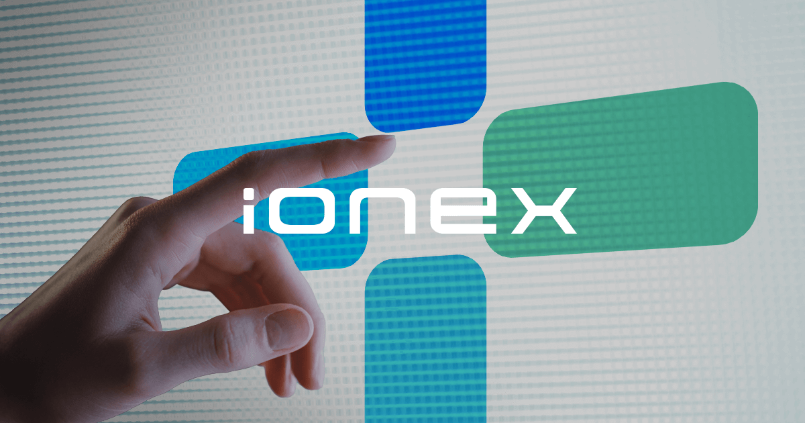

品牌活動提案｜華文公關獎佳作
光陽 IONEX
從永續能源與低碳生活出發，規劃結合復古時裝週試乘會、社群內容與減碳行動的品牌體驗提案。
專案背景
電動車市場競爭加劇，品牌需要以更貼近生活的方式傳達永續發展概念，讓大眾看見 IONEX 不只是交通工具，也是低碳生活的新選擇。
策略主軸
企劃以「從人性出發，全面佈局綠能時代」為核心，將復古風格、試乘體驗與社群參與結合，降低永續議題的距離感，同時強化品牌的親民與創新形象。
執行規劃
復古時裝週試乘會邀請參賽組別騎乘 S7、S7R 入場，開放現場與直播觀眾票選並安排試乘。
社群與 KOL 推廣以復古穿搭貼文募集參賽者，邀請 KOL 參與活動並製作人物訪談影片。
行動延續串接減碳應用程式與裸視 3D 動畫牆旗艦店，讓活動後仍能持續追蹤低碳行動。
預期效益
本案為提案作品，以下為企劃書設定的預期指標，並非已發生成果。
社群貼文觸及200,000人次
試乘會參與10,000人次
3D 動畫觸及500,000人次
應用程式使用100,000人次
企劃觀點
永續溝通需要把宏大的環境議題轉成可參與、可分享的日常體驗。透過試乘、穿搭與創作者內容，能讓電動車從技術規格走進使用者的社群語言。
查看完整企劃書